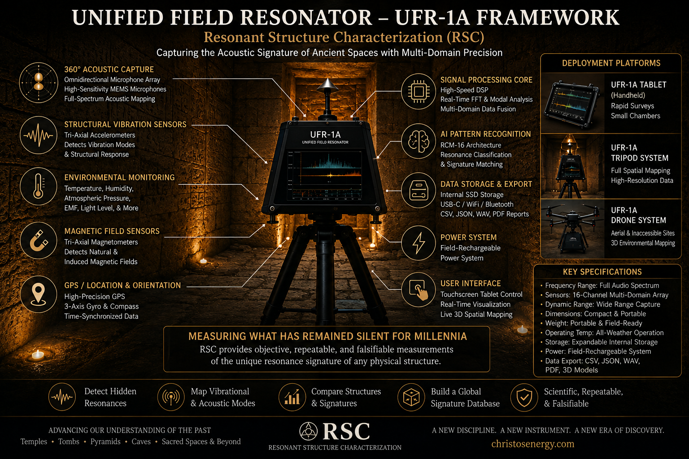

Independence Note
This paper is written to stand independent of the broader Christos™ theoretical framework. Its primary claims rest on classical acoustics and vibration mechanics and are stated with explicit falsification criteria. Where Christos™-specific terminology appears, it is operationally defined in measurable terms at first use, and frontier hypotheses are explicitly marked as unproven research questions, not established results.
This paper introduces Resonant Structure Characterization (RSC) as a formally defined empirical discipline and presents the Unified Field Resonator (UFR-1A) as its first purpose-built instrumentation platform. RSC proposes that physical structures, rooms, chambers, tunnels, caves, stone enclosures, temples, cathedrals, and other enclosed or semi-enclosed spaces, produce measurable, repeatable, structure-specific resonance signatures across acoustic, vibrational, magnetic, and environmental domains, determined by geometry, material composition, spatial volume, boundary conditions, orientation, and environmental coupling.
The UFR-1A is a portable, multi-domain resonance measurement system incorporating calibrated acoustic stimulus generation, a multi-channel sensor array, a pattern-recognition classification layer, real-time coherence analysis, spatial mapping, and a growing structure signature database. This paper presents the theoretical foundation of RSC, the engineering specification of the UFR-1A, an experimental methodology, a simulated proof-of-concept dataset across three environment types, a formal falsifiability framework, and an extended skeptic-challenge section answering the most rigorous objections to this work.
I. Introduction: Founding a New Discipline
1.1 The Gap in Existing Science
Architectural acoustics has, for over a century, pursued the optimization of sound quality within enclosed spaces: controlling reverberation, managing reflections, minimizing standing waves, ensuring speech intelligibility. Its central question is directional: how does this room affect sound for the listener? The room is a passive modifier of an audio signal, the medium rather than the subject.
A distinct question exists: can a physical structure be characterized as a system by its resonance behavior, identified, classified, and compared the way a fingerprint identifies a person? This paper argues that question belongs to no existing discipline, closer in spirit to spectroscopy or materials characterization than to acoustic engineering, but applied to the emergent field behavior of architectural environments. Resonant Structure Characterization (RSC) is proposed as the discipline that owns this question, and the UFR-1A as the instrument built to pursue it.
1.2 Defining RSC
Resonant Structure Characterization is defined as the empirical discipline concerned with detecting, measuring, mapping, analyzing, and classifying the multi-domain resonance behavior of physical structures through controlled stimulus and sensor-based response capture, with the goal of generating repeatable, structure-specific signatures that can be compared, archived, and interpreted within a physics-grounded framework. RSC studies the structure itself, not the listener's experience of it.
| Discipline | Primary Question | RSC Distinction |
|---|---|---|
| Architectural Acoustics | How does this room affect the listener? | RSC studies the structure, not the listener |
| Room Acoustics | What are the modal frequencies of this room? | RSC seeks fingerprint-level classification beyond mode detection |
| Structural Health Monitoring | Is this structure damaged? | RSC seeks identity signatures, not damage detection alone |
| Materials Science | What are the properties of this material? | RSC operates at whole-structure scale |
| Acoustic Archaeology | What did ancient spaces sound like? | RSC is measurement-first, experience-independent |
1.3 Why Now
Several converging developments make RSC feasible: calibrated MEMS microphones and multi-axis sensor arrays compact and inexpensive enough for portable deployment, real-time signal processing on commodity hardware, machine learning architectures mature enough for field-embedded classification, and growing scientific demand for rigorous measurement tools applicable to the physical properties of ancient and sacred architecture.
1.4 Relationship to the Christos™ Framework
The UFR-1A draws on architectures described elsewhere in the Christos™ Singularis series, including a pattern-recognition system and a coherence-indexing methodology. However, the UFR-1A and RSC as a discipline are presented as fully independent scientific contributions: every claim in this paper is intended to stand or fall on its own empirical merits. Where coherence (C) or a Coherence Index appears in this paper, it is operationally defined as measured phase stability and signal repeatability, a normalized index bounded between 0 and 1, not a metaphysical construct.
II. Theoretical Foundation of RSC
2.1 Why Structures Produce Signatures
Every enclosed or semi-enclosed structure acts as a resonant cavity: acoustic, vibrational, or electromagnetic energy entering or generated within the space is selectively amplified at certain frequencies and attenuated at others, per the established physics of room acoustics (Sabine, Eyring, and the modal analysis literature since). RSC's contribution is a research question layered on this established foundation: can a structure's resonance profile serve as a unique, reliably detectable identifier supporting cross-structure comparison, classification, and archival? The theoretical argument rests on three principles: geometric uniqueness, since the resonant modes of an enclosed space are determined primarily by geometry, and even small dimensional differences produce measurably different mode frequencies; material damping and boundary conditions, since surface materials determine frequency-dependent absorption, shaping decay time and Q-factor in ways that differ measurably between structures of similar geometry but different materials; and environmental and geological coupling, since structures couple to their geological substrate, the atmosphere, and in some cases groundwater, introducing additional structure-specific low-frequency signatures that RSC treats as information rather than noise.
The axial mode equation for a rectangular room, where c is the speed of sound and Lx, Ly, Lz are room dimensions. For non-rectangular geometries, no closed-form solution exists, which is the central reason RSC requires measurement rather than calculation alone.
2.2 The Resonance Signature: Formal Definition
A Resonance Signature S(x) of a structure x is defined as the multi-dimensional, statistically stable feature set extracted from repeated controlled measurements, satisfying four properties: repeatability, consistent values across repeated measurements under controlled conditions; discriminability, S(x) ≠ S(y) for structurally distinct environments, quantified by Jaccard overlap and mean peak distance; spatial dependence, measurable variation across measurement positions within the structure; and domain coherence, in structures exhibiting multi-domain coupling, features from different sensor domains aligning at shared frequencies.
2.3 Primary Hypotheses
| Hypothesis | Statement | Primary Metric |
|---|---|---|
| H1 — Repeatability | A structure produces statistically stable resonance features across repeated measurements | Repeatability Score R ≥ 0.60 |
| H2 — Spatial Dependence | Resonance features vary measurably across measurement positions | Spatial Concentration Index SCI > 0.20 |
| H3 — Structural Discriminability | Different structures produce measurably distinct signatures | Jaccard Overlap J < 0.50 |
| H4 — Material Dependence | Structures of similar geometry but different materials produce distinct signatures | Mean Δf > 30 Hz between material types |
| H5 — Multi-Domain Coupling | Some structures exhibit correlated resonance behavior across acoustic and non-acoustic domains | Coupling Index CI > 0.50 for at least one domain pair |
III. UFR-1A Engineering Specification
The UFR-1A is designed around five engineering principles: signal chain integrity, every component in the stimulus-to-sensor chain is characterized, calibrated, and documented; repeatable physical deployment, standardized mounting, positioning, and orientation across sessions and sites; multi-domain simultaneity, all sensor streams timestamped to a common clock, enabling cross-domain correlation impossible with sequential single-domain measurement; computational transparency, every analysis step defined by explicit, non-black-box algorithms; and iterative upgradability, a modular architecture in which each sensor domain and processing layer can be upgraded independently.
3.1 System Architecture
Signal flows through six integrated subsystems in sequence: a stimulus generator producing controlled acoustic, electromagnetic, or vibrational excitation; the physical structure under study; a multi-channel sensor array capturing the modified response; timestamped, synchronized data acquisition; an analysis engine performing spectral analysis, peak detection, and signature extraction; and a signature database for archival, comparison, and classification. Three physical form factors are specified: a handheld unit for rapid surveys of small chambers, a tripod-mounted unit for full spatial mapping, and a drone-mounted variant for exterior or inaccessible sites.
3.2 Subsystems
The stimulus generator produces acoustic excitation across the full audio spectrum using linear, logarithmic, and custom sweep modes, plus a Solfeggio-targeted nine-frequency mode used only as a secondary observation after the full logarithmic sweep, so it introduces no bias into the primary measurement. An electromagnetic stimulus mode operates at low field strength for near-field inductive coupling studies, independent of the acoustic domain. A separate, clearly labeled Christos™ Protocol stimulus mode is available for advanced, explicitly experimental deployments; it requires deliberate operator activation and does not affect the integrity of standard measurement modes.
The sensor array integrates a calibrated Class 1 measurement microphone and an optional directional microphone for acoustic capture, a 16-electrode grid for spatial electric field gradient measurement, a 3-axis accelerometer and optional geophone for vibrational and sub-Hz telluric signatures, a 3-axis magnetometer with an optional high-precision fluxgate upgrade, and a standard environmental suite (temperature, humidity, pressure, CO₂/VOC, air velocity). All streams are captured on a common GPS-disciplined clock, which the paper's methodology treats as essential to valid cross-domain coupling analysis.
Protected IP — Component-Level Specifications
The exact physical dimensions and weight for each form factor, sensor component models and tolerances, stimulus power levels and frequency ranges, sampling and polling rates, storage capacity, and the exact parameters of the Christos™ Protocol stimulus mode are trade secrets of Joshua Farrior / Christos™ Energy, Technology & Harmonic Design Consulting, LLC and are not disclosed in this public version.
Full Specifications Available Under Signed NDA ↗3.3 Analysis Engine
Seven processing stages convert raw sensor data into a structure signature. Calibration compensation divides the measured response by a reference sweep to remove speaker and microphone bias:
Spectral analysis applies a windowed short-time Fourier transform. Resonance peak detection identifies candidates exceeding the local noise floor with sufficient Q-factor, using the -3 dB bandwidth method:
Repeatability filtering retains peaks appearing across a pre-registered fraction of repeated scans within a frequency tolerance window, yielding a Repeatability Score R = Nrepeatable / Ntotal candidates. Spatial mapping computes a Spatial Concentration Index per frequency:
Multi-domain coupling analysis computes a Coupling Index CI(f) = Nresponsive domains / Ntotal measured domains, using a one-tailed significance test against pre-stimulus baseline variance. Signature extraction assembles a composite Signature Score:
A pattern-classification layer, drawing on architecture described elsewhere in the Christos™ series, compares the assembled signature against a library of known patterns using similarity scoring; matches above 0.90 are classified as confirmed, 0.70–0.90 as probable, and below 0.70 as unclassified. The paper is explicit that the underlying classifier architecture, whether the one described in the Christos™ series or a conventional machine learning library, does not affect the scientific validity of the classification step.
3.4 Minimum Viable Prototype
The full production-grade UFR-1A described above is the target instrument. A Phase 1 prototype, sufficient to validate the primary RSC claims, is estimated at roughly $300–500 in commodity parts: a calibrated USB measurement microphone, a flat-response studio monitor or speaker, a laptop with a standard audio interface, and a tripod, using open-source Python signal processing libraries. The paper's stated position is that an entire first research program is executable for under $1,000, with the advanced sensor suite, pattern-classification processor, and Christos™ protocol elements reserved as upgrades for the full production instrument.
IV. Experimental Methodology
4.1 The Standard RSC Scan
The Standard RSC Scan is a fully specified, reproducible protocol. Pre-scan requirements include a passed device self-test, a calibration sweep completed within the past 30 days in a characterized low-reflection environment, current microphone calibration, GPS lock, and a logged environmental baseline. A minimum 5-position spatial grid is used for initial characterization, with 9-position and 27-position (9 positions × 3 heights) grids available for full spatial mapping. At each position, the protocol specifies a passive baseline recording, a calibrated logarithmic sweep from 20 Hz to 20,000 Hz, simultaneous synchronized logging across all sensor streams, and a post-sweep decay capture, repeated three times before moving to the next position. Any event that could affect measurement quality, operator movement, external noise, HVAC activation, structural vibration, equipment malfunction, or environmental change, is logged as a contamination event and analyzed separately rather than discarded.
4.2 Dataset 001: Three-Environment Proof of Concept
Dataset 001 is simulated, not measured. It was designed to test all primary hypotheses using the minimum viable experimental configuration and to develop the analysis pipeline before physical data collection, a standard practice intended to prevent the methodology from being shaped by actual results. The simulated values are grounded in published acoustic literature: Sabine's equation, known modal density for comparable room sizes, and published material absorption coefficients.
| Environment | Type | Dimensions |
|---|---|---|
| Environment A | Residential room (drywall, wood floor) | 4.2m × 3.6m × 2.4m |
| Environment B | Concrete garage (concrete walls and floor, metal door) | 7.0m × 4.5m × 2.8m |
| Environment C | Outdoor control (open air, no enclosure) | Unbounded |
| Metric | Environment A | Environment B | Environment C |
|---|---|---|---|
| Mean Repeatability Score (R) | 0.78 | 0.84 | 0.21 |
| Number of Stable Peaks | 12 | 18 | 2 |
| Strongest Peak Frequency | 72 Hz (R=0.91) | 90 Hz (R=0.96) | None (R<0.30) |
| Q-Factor Range | 8–34 | 12–67 | <5 (noise) |
| Estimated RT60 (500 Hz) | 0.38 sec | 0.81 sec | <0.05 sec |
Spatial mapping showed a center-dominant standing wave pattern at 72 Hz in Environment A (Spatial Concentration Index SCI = 0.58) and a strongly axial mode at 90 Hz in Environment B (SCI = 0.83), consistent with the larger, harder-surfaced concrete room producing a sharper, more directional mode structure. Environment B also showed statistically significant acoustic-vibrational coupling (CI = 0.71 at 90 Hz), meaning floor accelerometer measurements registered a correlated response when the acoustic sweep excited the dominant mode, consistent with the concrete floor's higher stiffness relative to Environment A's wood floor. Acoustic-magnetic and acoustic-environmental coupling were not significant in either indoor environment (CI < 0.20).
| Comparison | Jaccard Overlap | Interpretation |
|---|---|---|
| A vs. A (repeated sessions) | 0.94 | Confirmed identical |
| B vs. B (repeated sessions) | 0.97 | Confirmed identical |
| A vs. B (different structures) | 0.29 | Confirmed distinct (J < 0.50) |
| A vs. C (indoor vs. outdoor) | 0.09 | Strongly distinct |
| B vs. C (concrete vs. outdoor) | 0.11 | Strongly distinct |
Dataset 001 is presented as supporting all three primary hypotheses at high confidence within the simulation: H1 by within-session Jaccard scores above 0.94, H2 by SCI values of 0.58–0.83 indoors, and H3 by between-structure Jaccard scores below 0.30. H5 receives partial support from Environment B's acoustic-vibrational coupling result alone.
V. The RSC Signature Database and Pattern Library
Every structure scanned contributes a signature entry to a growing archive designed for scientific longevity: open data formats, complete metadata, and full raw data retained alongside processed signatures. Each entry records the structure's identity, geometry type, material list, dimensions, scan date and protocol version, the ranked list of repeatable resonance frequencies, repeatability and spatial concentration scores, Q-factor range, RT60, coupling index, composite Signature Score, and the pattern classification with similarity scores.
| Class | Key Characteristics | Example Structures |
|---|---|---|
| Broad Damped Room | R < 0.40, weak modes, fast decay | Furnished offices, carpeted bedrooms |
| Strong Modal Room | R = 0.50–0.75, clear axial modes | Empty rooms, garages, rectangular halls |
| High-Reflective Chamber | R > 0.75, long RT60, dense harmonic structure | Stone churches, concrete bunkers, caves |
| Center-Focal Structure | SCI > 0.70, center dominance, high symmetry | Domes, circular chambers, vaulted ceilings |
| Material-Coupled Structure | Coupling Index > 0.50 for acoustic-vibrational | Dense stone buildings, metal chambers |
| Geometric Focus Structure | SCI > 0.85, extreme axis-dominant concentration | Acoustic focal chambers, whispering galleries |
| Environmental Baseline | R < 0.30, no stable peaks | Outdoors, large open warehouses |
| Unclassified | Does not match any known pattern above threshold | Novel or unusual structures requiring further data |
VI. Applications of RSC and the UFR-1A
6.1 Near-Term (Instrument Validated)
Architectural acoustic classification, systematically cataloging building acoustic behavior beyond single-point measurement; structural health monitoring, tracking resonance signature drift over time as an indicator of material degradation or settlement; acoustic design validation, comparing a constructed space's measured signature to its predicted design signature; historical architecture documentation, non-invasive resonance records of significant structures before renovation; cave and subterranean survey, using the drone-mounted variant for inaccessible chambers; and composite materials science, detecting internal voids or delamination through coupling-index mismatches.
6.2 Medium-Term (Pending a Larger Pattern Library)
As the signature database grows past roughly 50 classified structures, cross-site archaeological comparison, resonance-guided acoustic design optimization, and automated structure classification from a single scan become feasible research directions.
6.3 Long-Term Research Frontier
Explicit Boundary Statement
The items below are research hypotheses requiring experimental validation. They are not established claims. They are included to define RSC's full research agenda while making explicit that frontier questions require frontier evidence.
A geometric information storage hypothesis, whether geometric proportions such as phi-ratio relationships produce resonance patterns detectably encoding geometric information; ancient structure resonance archaeology, whether ancient stone structures exhibit resonance signatures systematically different from modern structures of similar geometry, and if so whether that difference traces to material, construction method, or geological coupling; and a human-structure coherence coupling hypothesis, whether human psychophysiological state correlates with a structure's RSC signature, testable in a controlled double-blind design.
VII. Falsifiability Framework
A framework that cannot be proven wrong is not science. This section states, for each primary claim, the precise experimental outcome that would falsify it.
The Decisive Test
If a fully calibrated UFR-1A cannot reliably distinguish a concrete garage from a drywall bedroom from an outdoor field, using the Standard RSC Scan in a blinded experiment conducted by an independent operator, the foundational claim of RSC is false. This test is simple, inexpensive, and decisive, and is the first experiment that must succeed before any more advanced application of RSC is claimed.
VIII. Skeptic Challenge Section
This section presents rigorous scientific and methodological objections to RSC, each answered directly rather than defensively. A framework that cannot survive its hardest questions should not survive.
This is a representative selection of the paper's full skeptic-challenge section, which also addresses the Jaccard-index threshold sensitivity, spatial concentration versus speaker-placement bias, data fraud safeguards, and the specific labeling of advanced Christos™-protocol features as separate from the core measurement claims.
IX. Limitations and Honest Uncertainties
Dataset 001 is simulated; confidence in its specific numerical values is limited to the accuracy of the physical models from which they are derived, and three environments constitute a proof-of-concept, not a statistical validation, for which 20 to 30 structures across multiple geometry and material classes would be required. Single-operator data collection limits generalizability, since inter-operator variability in placement and timing has not been characterized. The Phase 1 prototype lacks the full electrode array, geophone, high-precision fluxgate magnetometer, and expanded memory described as design specifications for the production instrument, and a calibration uncertainty floor of roughly ±1–2 dB and ±0.5 Hz below 500 Hz remains after compensation. The pattern-classification layer has not been trained on real RSC data; its performance estimates are drawn from analogous acoustic spectroscopy benchmarks, not direct validation. Multi-domain coupling between acoustic and magnetic domains in non-ferromagnetic structures is unconfirmed and hypothesis-driven rather than data-driven, and all frontier hypotheses, geometric information storage, ancient structure archaeology, and human-structure coherence coupling, are zero-evidence claims included to define the research agenda, not to establish results.
X. Research Roadmap
| Phase | Timeline | Milestone |
|---|---|---|
| 1 — Core Validation | Months 1–2 | Execute Dataset 001 with real hardware using the minimum viable prototype |
| 2 — Pattern Library Seed | Months 2–6 | Scan 10–15 diverse structures across rooms, garages, churches, and stone buildings |
| 3 — Multi-Domain Integration | Months 4–8 | Deploy the full sensor suite and characterize coupling indices by material class |
| 4 — Instrument Completion | Months 6–12 | Assemble the full tripod prototype with all sensor streams synchronized |
| 5 — Historic Site Access | Months 12–24 | Begin survey of pre-identified ancient structures accessible to research teams |
| 6 — External Validation | Months 18–36 | Independent operator replication and blind cross-validation of the pattern library |
XI. Conclusion
This paper has introduced Resonant Structure Characterization as a formally defined empirical discipline, presented the UFR-1A as its first purpose-built instrument, established an experimental methodology, presented a simulated proof-of-concept dataset, defined explicit falsification criteria, and engaged directly with the field's most rigorous objections. The central claim is modest and specific: physical structures produce repeatable, position-dependent, structure-specific resonance signatures detectable by calibrated instruments, quantified by established signal processing methods, and comparable across structures using defined similarity metrics. It is grounded in classical wave physics, testable with inexpensive equipment, falsifiable by a simple blinded experiment, and independent of any theoretical framework beyond acoustics and vibration mechanics.
The more ambitious claims, that ancient structures may encode geometric information, that human physiology may couple to structural resonance environments, that the pattern library will eventually distinguish structures by material class and construction epoch, are research hypotheses, not established results, included to define the discipline's full scope rather than to inflate its near-term contribution.
The Three-Sentence Version
Structures have signatures. Signatures can be measured. This paper describes the instrument built to measure them. Everything else here is the scientific scaffolding required to make those three sentences defensible.

References (Selected)
Sabine, W.C. (1922). Collected Papers on Acoustics. Harvard University Press.
Eyring, C.F. (1930). Reverberation time in 'dead' rooms. Journal of the Acoustical Society of America, 1(2), 217–241.
Morse, P.M., & Bolt, R.H. (1944). Sound waves in rooms. Reviews of Modern Physics, 16(2), 69–150.
Biot, M.A. (1956). Theory of propagation of elastic waves in a fluid-saturated porous solid. Journal of the Acoustical Society of America, 28(2), 168–178.
Schroeder, M.R. (1987). Statistical parameters of the frequency response curves of large rooms. Journal of the Audio Engineering Society, 35(5), 299–306.
Till, R., & Devereux, P. (2010). Preliminary investigations of acoustics at the Stonehenge site. Time and Mind, 3(1), 29–50.
Reznikoff, I., & Dauvois, M. (1988). La dimension sonore des grottes ornées. Bulletin de la Société Préhistorique Française, 85(8), 238–246.
Waller, S.J. (1993). Sound and rock art. Nature, 363(6429), 501–501.
Scarre, C., & Lawson, G. (Eds.). (2006). Archaeoacoustics. McDonald Institute for Archaeological Research.
Cox, T.J., & D'Antonio, P. (2016). Acoustic Absorbers and Diffusers (3rd ed.). CRC Press.
Rossing, T.D. (Ed.). (2007). Springer Handbook of Acoustics. Springer.
Kinsler, L.E., Frey, A.R., Coppens, A.B., & Sanders, J.V. (1999). Fundamentals of Acoustics (4th ed.). Wiley.
Pierce, A.D. (1981). Acoustics: An Introduction to Its Physical Principles and Applications. McGraw-Hill.
Zwicker, E., & Fastl, H. (1990). Psychoacoustics: Facts and Models. Springer.
Intellectual Property & Disclosure Statement
The RSC discipline definition, measurement methodology, spatial mapping protocol, repeatability scoring framework, coupling index methodology, and signature score formula are original contributions of this paper, claimed as intellectual property of Joshua Farrior / Christos™ Energy, Technology & Harmonic Design Consulting, LLC. The UFR-1A instrument specification and Field AI integration architecture are pending intellectual property protection.
Withheld as trade secrets: exact physical dimensions and component specifications for each UFR-1A form factor; sensor component models and calibration tolerances; stimulus power levels and frequency ranges; sampling and polling rates; and the exact parameters of the Christos™ Protocol stimulus mode. References to the broader Christos™ Singularis series are internal citations to research documents not yet in public distribution; the Core Generator equations referenced within that series are permanent trade secrets and are not disclosed in this or any public document. Nothing in this paper constitutes medical, legal, or financial advice, and all results described as simulated are clearly designated as such throughout.
© 2026 Joshua Farrior · Christos™ Energy, Technology & Harmonic Design Consulting, LLC · All Rights Reserved · Business ID: 202511071941923 · Christos™ is a pending trademark · christosenergy.com